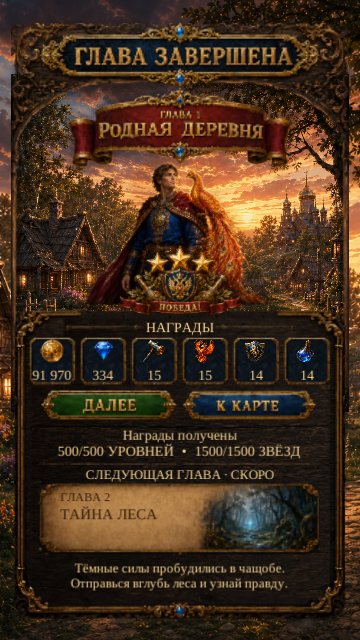

Chapter Complete — readable rewards and captions
Actual Unity Play Mode captures from the implemented revision-9 prefab. Synthetic completed Chapter 1: 500/500 rounds and 1500/1500 stars. Simulated screen sizes and safe areas; these are not Android device captures.

Russian · 360 × 640 · actual Unity capture
Larger live reward values, a two-line progress summary, and live Russian/English teaser captions. Existing artwork is reused; the hero is scaled proportionally and the footer preserves its corners through nine-slicing. Reward values and the bottom description now clear the decorative frames.
Verification: 16 Play Mode + 2 Edit Mode tests passed; 0 failed or skipped. Button routing, repeated acknowledgment without duplicate rewards, save preservation, text fit and decorative margins are covered. Test results and limitations.